Guía esencial de Altium Designer 26.11.1
Esta guía resume las herramientas y procesos indispensables para desarrollar un proyecto de PCB en Altium Designer, desde el esquemático hasta la generación de los archivos de fabricación.
No pretende explicar todas las funciones disponibles en Altium, sino servir como referencia rápida para recordar:
- dónde se encuentran las herramientas principales;
- cómo colocar y conectar componentes;
- cómo importar librerías;
- cómo transferir el esquemático al PCB;
- cómo configurar reglas;
- cómo colocar y rutear componentes;
- cómo comprobar el diseño;
- cómo generar los archivos necesarios para fabricación.
[!NOTE] La interfaz de Altium es contextual. Algunas herramientas únicamente aparecen cuando se encuentra activo un documento de esquemático (
.SchDoc) o PCB (.PcbDoc).
Contenido
- 1. Vista general de Altium
- 2. Crear y organizar un proyecto
- 3. Paneles importantes
- 4. Navegación, Grid y unidades
- 5. Componentes y librerías
- 6. Importar librerías externas
- 7. Editor de esquemáticos
- 8. Colocar y editar componentes
- 9. Conexiones eléctricas
- 10. Net Labels, Ports y alimentación
- 11. Organización visual del esquemático
- 12. Designators y anotación
- 13. Validar el esquemático
- 14. Transferir el diseño al PCB
- 15. Vista general del PCB Editor
- 16. Board Shape, origen y Grid
- 17. Capas de la PCB
- 18. Layer Stack Manager
- 19. Placement de componentes
- 20. Reglas de diseño
- 21. Importar reglas
- 22. Routing
- 23. Cambio de capa y vías
- 24. Polygon Pours y planos de GND
- 25. Auto Route
- 26. DRC y revisión final
- 27. Vista 3D
- 28. Gerber y archivos de perforación
- 29. Flujo general recomendado
1. Vista general de Altium
Altium Designer integra dentro del mismo programa el diseño del:
La interfaz principal contiene:
- barra superior de menús;
- área central de documentos;
- panel
Projects; - panel
Properties; - panel
Components; - herramientas específicas según el documento activo.
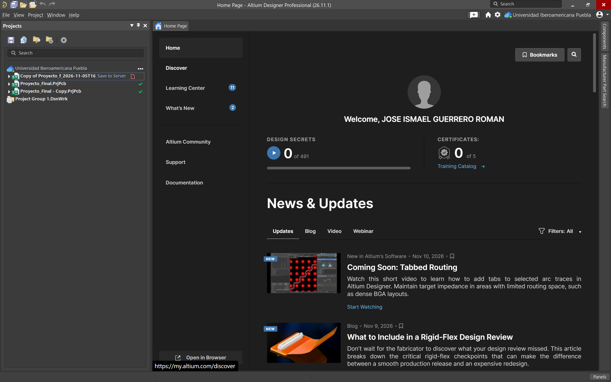
Una característica importante es que las opciones cambian dependiendo del documento activo.
Por ejemplo:
.SchDoc → herramientas de esquemático
.PcbDoc → herramientas de PCB
.SchLib → editor de símbolos
.PcbLib → editor de footprints
2. Crear y organizar un proyecto
Para un diseño de PCB se utiliza un proyecto tipo:
Una estructura básica normalmente contiene:
Desde el panel Projects pueden añadirse nuevos documentos haciendo clic derecho sobre el proyecto:
o:
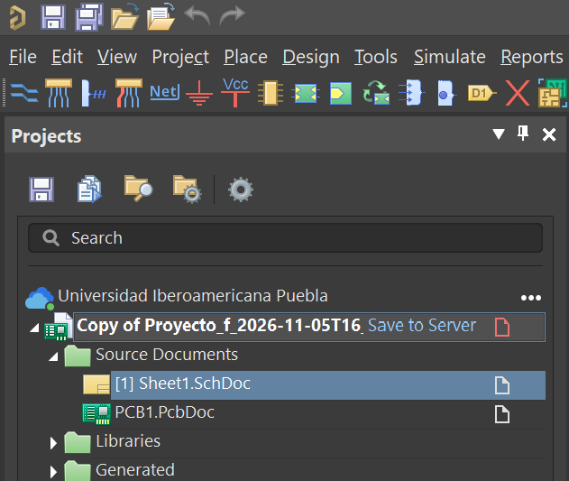
Guarda los documentos desde el principio con nombres claros.
3. Paneles importantes
Los paneles pueden abrirse desde:
Los más importantes son:
| Panel | Uso |
|---|---|
Projects |
Archivos y estructura del proyecto |
Properties |
Propiedades del objeto seleccionado |
Components |
Búsqueda y colocación de componentes |
Messages |
Errores y advertencias |
View Configuration |
Capas y visualización del PCB |
PCB Rules And Violations |
Violaciones de reglas |
El panel más utilizado es:
Su contenido cambia según el objeto seleccionado.
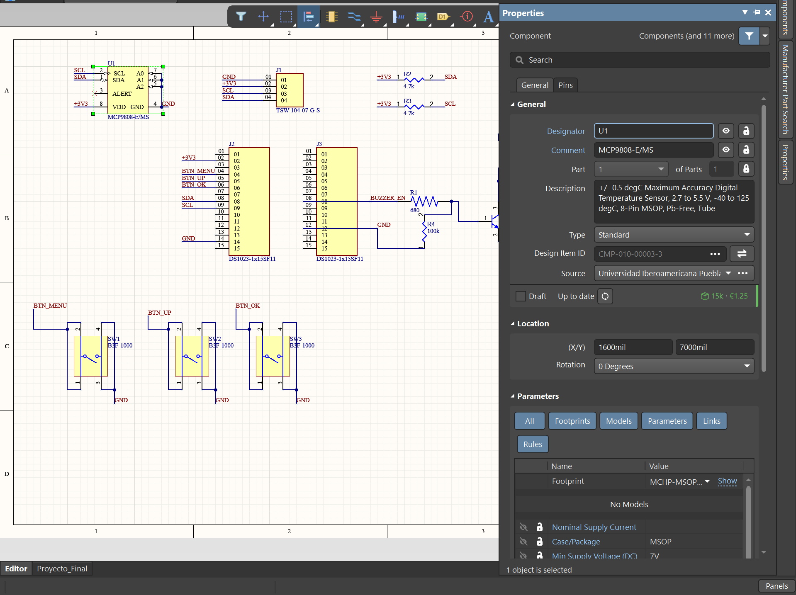
4. Navegación, Grid y unidades
Durante el diseño es importante trabajar utilizando una cuadrícula o:
El Grid permite mover y colocar objetos sobre posiciones ordenadas.
En muchos contextos puede modificarse rápidamente mediante:
En el PCB también podemos alternar las unidades utilizando:
Normalmente trabajaremos con:
o:
Para cancelar una herramienta o salir del modo actual utiliza:
Durante muchas herramientas interactivas:
permite abrir las propiedades del objeto que estamos colocando.
5. Componentes y librerías
Un componente utilizado en un proyecto puede contener diferentes representaciones:
El símbolo se utiliza en el esquemático.
El footprint representa físicamente el componente en la PCB.
El modelo 3D permite revisar su forma física.
[!IMPORTANT] Antes de transferir un componente al PCB comprueba que tenga un footprint correcto.
Buscar componentes
Abre:
Desde este panel puedes:
- seleccionar una librería;
- buscar un componente;
- revisar sus datos;
- colocarlo en el esquemático.
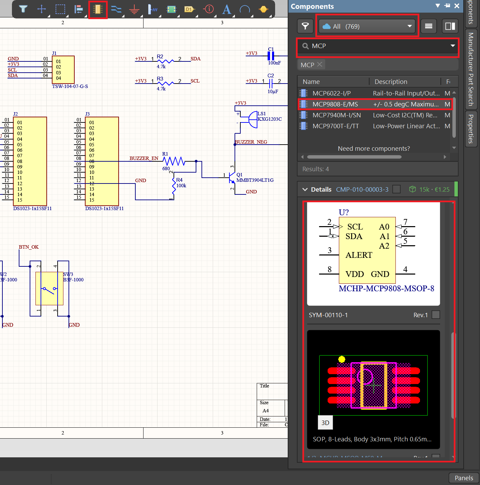
Componentes externos
Si un componente no se encuentra disponible, puede buscarse en plataformas como:
o directamente en el sitio del fabricante.
Cuando sea posible busca utilizando el:
exacto.
[!WARNING] Comprueba siempre el símbolo, footprint y numeración de pads contra el datasheet oficial antes de fabricar una PCB.
6. Importar librerías externas
Altium puede utilizar librerías externas como:
Para utilizar una .IntLib:
- descarga y descomprime la librería;
- localiza el archivo
.IntLib; - ábrelo con Altium;
- selecciona:
- abre:
- comprueba que los componentes aparezcan disponibles.
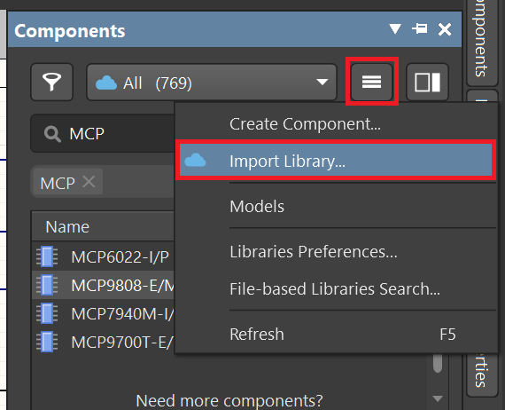
Si únicamente necesitas utilizar el componente no es necesario modificar los archivos fuente de la librería.
7. Editor de esquemáticos
El .SchDoc contiene la representación lógica del circuito.
Aquí se colocan:
- componentes;
- conexiones;
- Net Labels;
- Ports;
- Power Ports;
- textos y elementos gráficos.
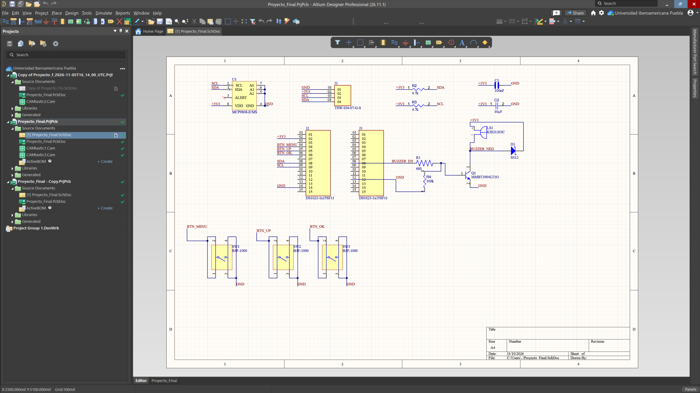
Antes de comenzar comprueba que el Grid permita conectar correctamente los pines de los componentes.
8. Colocar y editar componentes
Abre:
Busca el componente y utiliza:
Una vez unido al cursor:
clic izquierdo → colocar
Space → rotar
X / Y → reflejar durante determinadas operaciones
Tab → modificar propiedades
Esc → terminar
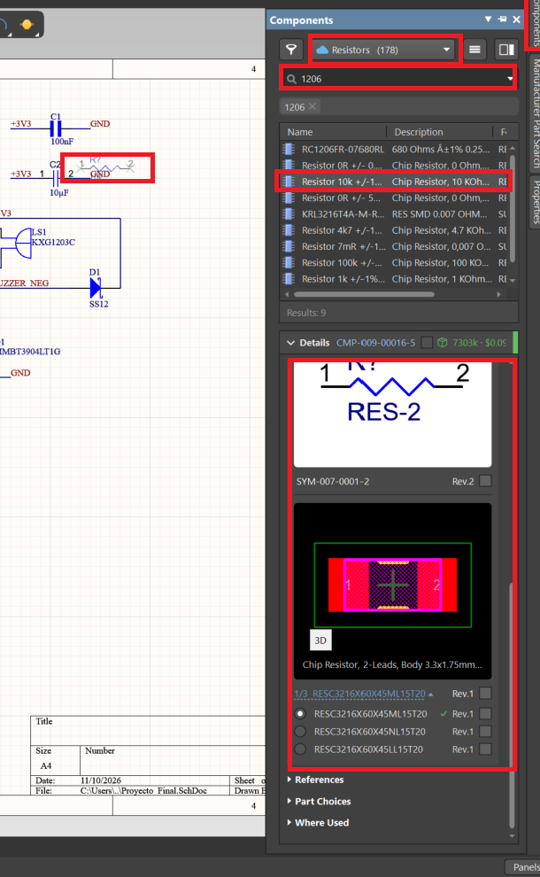
Las propiedades importantes normalmente incluyen:
Ejemplos de Designators:
9. Conexiones eléctricas
Para conectar eléctricamente componentes utiliza:
Procedimiento:
- selecciona
Wire; - haz clic sobre el extremo del primer pin;
- guía el cable;
- haz clic para crear esquinas;
- llega al pin destino;
- termina con
Esc.
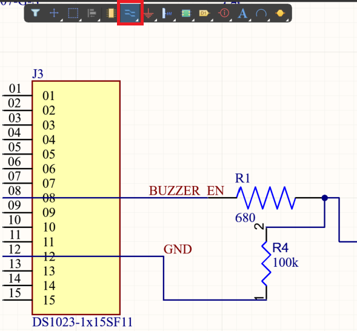
[!IMPORTANT]
WireyLineno son lo mismo.
Nunca utilices una línea gráfica para sustituir un Wire.
Junctions
Cuando varias conexiones deben unirse eléctricamente puede aparecer un:
normalmente representado mediante un punto.
Procura evitar cruces ambiguos en el esquemático.
10. Net Labels, Ports y alimentación
Net Labels
Para evitar cables largos utiliza:
Dos puntos que pertenecen a una misma red pueden compartir el mismo nombre.
Ejemplo:
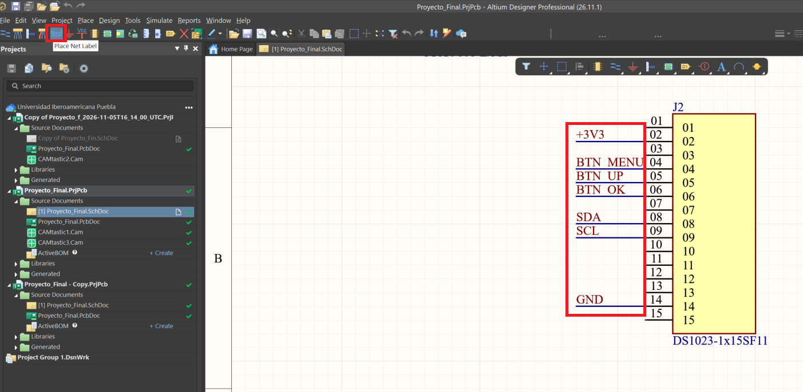
Ports
Para diseños divididos en varias hojas puede utilizarse:
Son especialmente útiles en diseños jerárquicos.
Power Ports
Para alimentación utiliza:
Ejemplos:
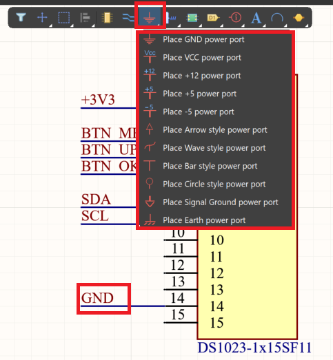
El nombre de la red es lo que determina la conexión eléctrica.
11. Organización visual del esquemático
Además de conexiones eléctricas pueden utilizarse:
- texto;
- líneas;
- rectángulos;
- elementos gráficos.
Estos sirven únicamente para organizar visualmente el circuito.
Una estructura recomendable es dividirlo en bloques:
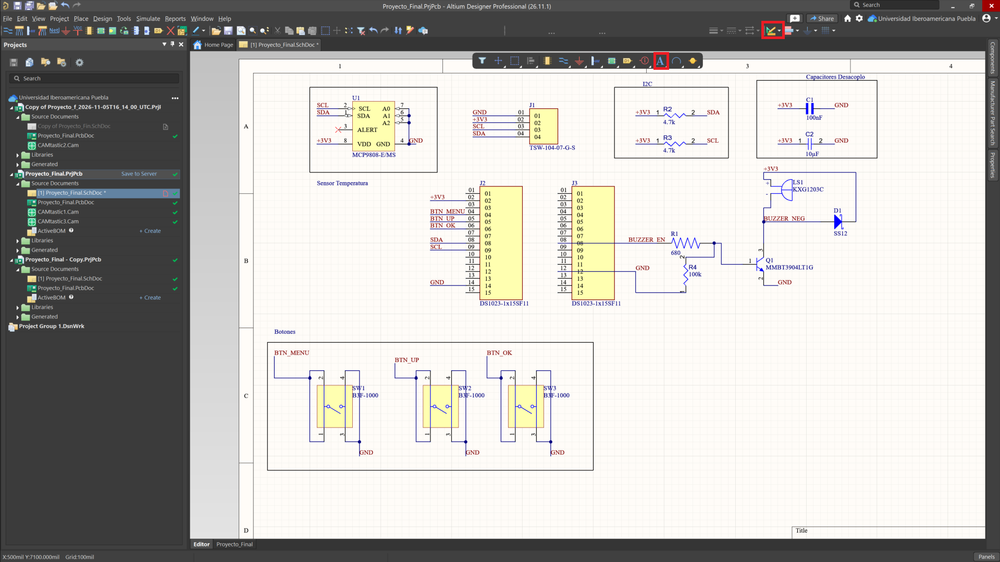
Siempre que sea posible mantén un flujo visual lógico:
12. Designators y anotación
Antes de transferir el proyecto al PCB todos los componentes deben tener identificadores únicos.
Utiliza:
Esto permite transformar:
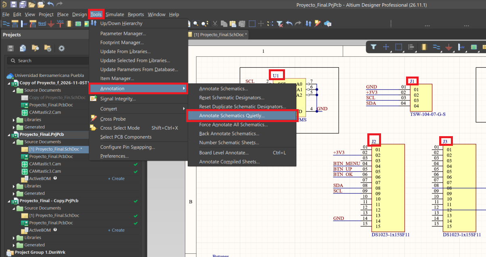
Comprueba que no existan designadores duplicados.
13. Validar el esquemático
Antes de crear el PCB ejecuta:
Los errores y advertencias aparecen en:
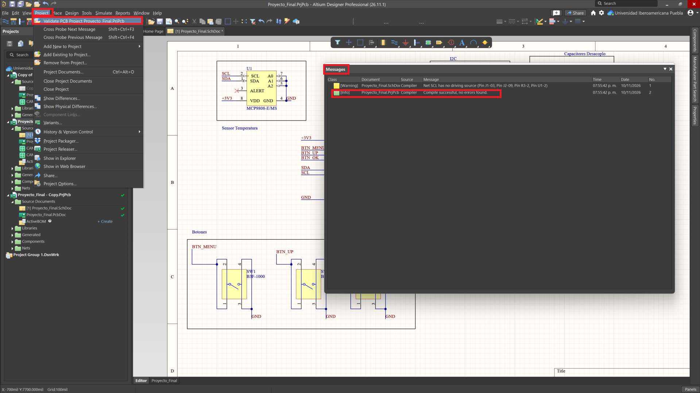
Revisa especialmente:
- conexiones incorrectas;
- pines sin conectar;
- conflictos eléctricos;
- designadores;
- componentes sin footprint.
No ignores errores sin comprender primero su causa.
14. Transferir el diseño al PCB
Con el esquemático terminado utiliza:
Altium abrirá el:
o:
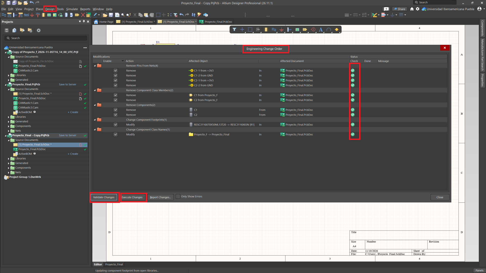
El flujo correcto es:
Esto transferirá:
- componentes;
- footprints;
- Nets;
- conexiones.
Si un componente no puede transferirse, comprueba primero su footprint.
15. Vista general del PCB Editor
El .PcbDoc contiene el diseño físico.
Aquí encontraremos:
- componentes;
- pads;
- pistas;
- vias;
- polígonos;
- capas;
- Board Shape.
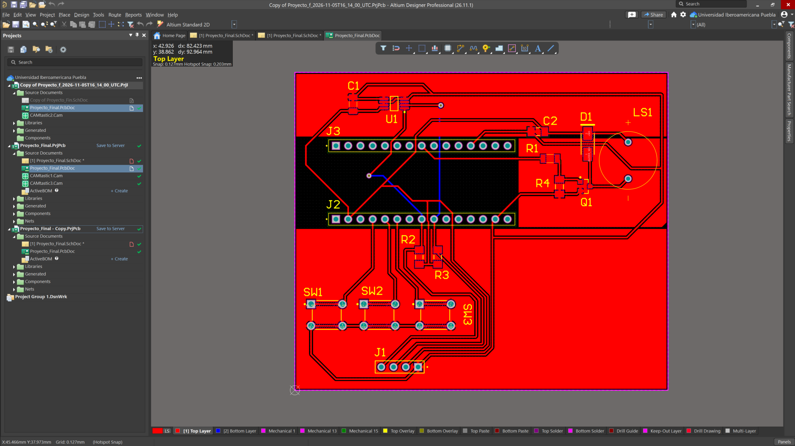
Los modos principales son:
16. Board Shape, origen y Grid
Board Shape
Define físicamente el tamaño de la PCB.
Puede redefinirse mediante:
Dibuja el perímetro real de la tarjeta.
Origen
Es recomendable establecer un punto conocido como origen.
Utiliza:
Normalmente puede colocarse en una esquina de la tarjeta.
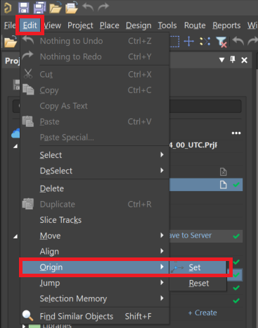
Grid
Presiona:
para cambiar rápidamente el Snap Grid.
Utiliza una cuadrícula suficientemente grande para organizar el diseño y reduce su tamaño únicamente cuando necesites ajustes más precisos.
17. Capas de la PCB
Las capas principales que debes conocer son:
| Capa | Función |
|---|---|
Top Layer |
Cobre superior |
Bottom Layer |
Cobre inferior |
Top Overlay |
Serigrafía superior |
Bottom Overlay |
Serigrafía inferior |
Top Solder |
Máscara superior |
Bottom Solder |
Máscara inferior |
Top Paste |
Pasta de soldadura superior |
Bottom Paste |
Pasta inferior |
Mechanical |
Información mecánica |
Keep-Out |
Zonas restringidas |
El panel principal para controlar su visualización es:
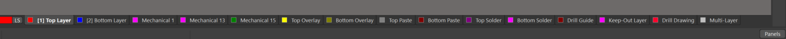
Para recorrer modos de visualización de una sola capa utiliza:
18. Layer Stack Manager
La estructura física de las capas se configura en:
Para una PCB sencilla de dos capas normalmente tendremos:además de máscara y serigrafía.
En proyectos multicapa pueden añadirse capas internas.
La estructura utilizada debe ser compatible con el fabricante.
19. Placement de componentes
Después del ECO los componentes deben organizarse dentro del Board Shape.
Durante el placement utiliza las:
para observar qué componentes deben conectarse.
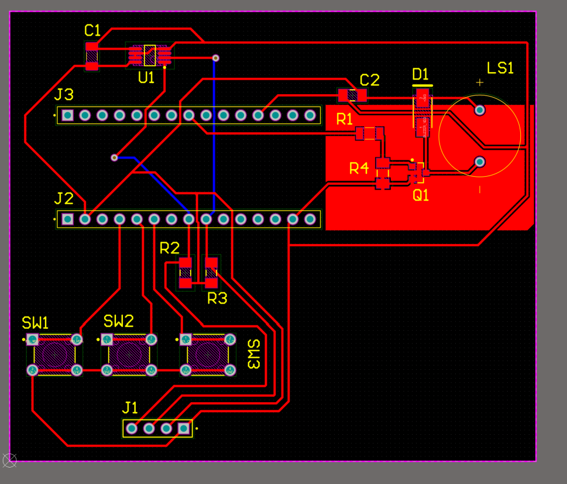
Orden recomendado:
- conectores y componentes con posición mecánica fija;
- circuitos principales;
- componentes asociados;
- capacitores de desacoplo cerca de sus pines;
- componentes secundarios.
Mientras mueves un componente:
No comiences a rutear hasta tener un placement razonablemente organizado.
20. Reglas de diseño
Las reglas determinan restricciones como:
Dependiendo del proyecto encontrarás:
o:
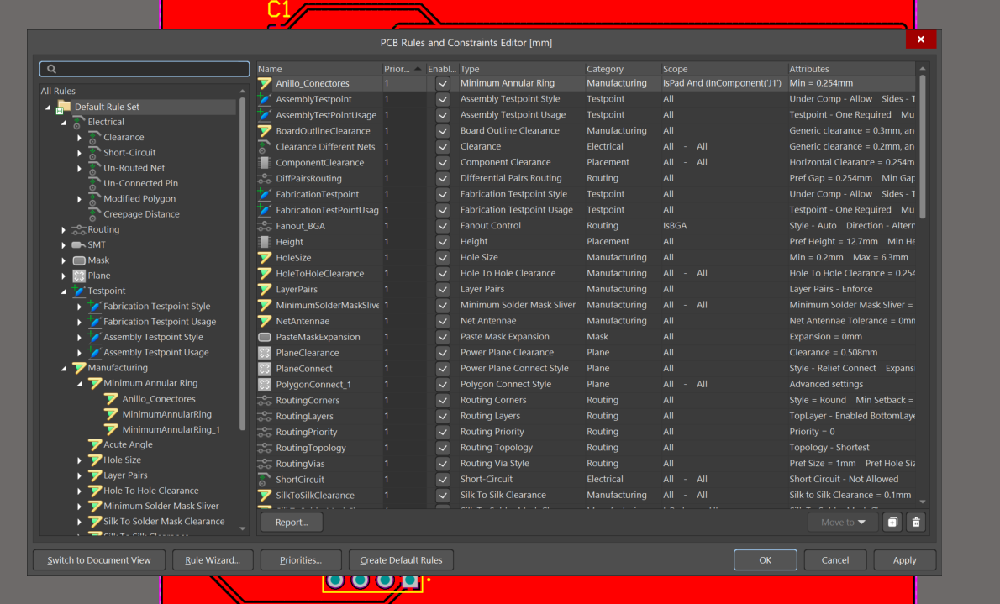
En Altium 26 algunos proyectos utilizan el nuevo Constraint Manager.
Reglas esenciales
Clearance
Separación mínima entre objetos eléctricos.
Width
Ancho permitido para las pistas.
Normalmente contiene:
Via Style
Dimensiones de las vías.
Incluye:
[!IMPORTANT] Configura estos valores según las capacidades reales del fabricante.
21. Importar reglas
Si ya dispones de un archivo de reglas:
en proyectos que utilizan el editor tradicional:
- abre:
- haz clic derecho en el árbol de reglas;
- selecciona:
- selecciona el archivo
.rul; - importa las reglas necesarias;
- revisa sus valores y prioridades.
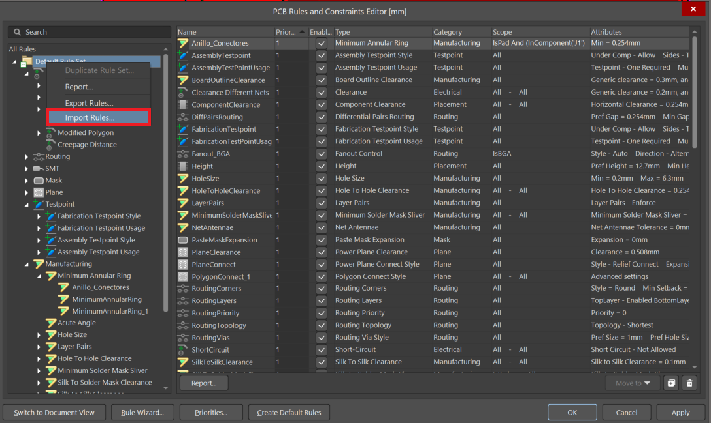
No utilices reglas importadas sin comprobar que correspondan con tu fabricante y proyecto.
22. Routing
Para crear físicamente las conexiones utiliza:
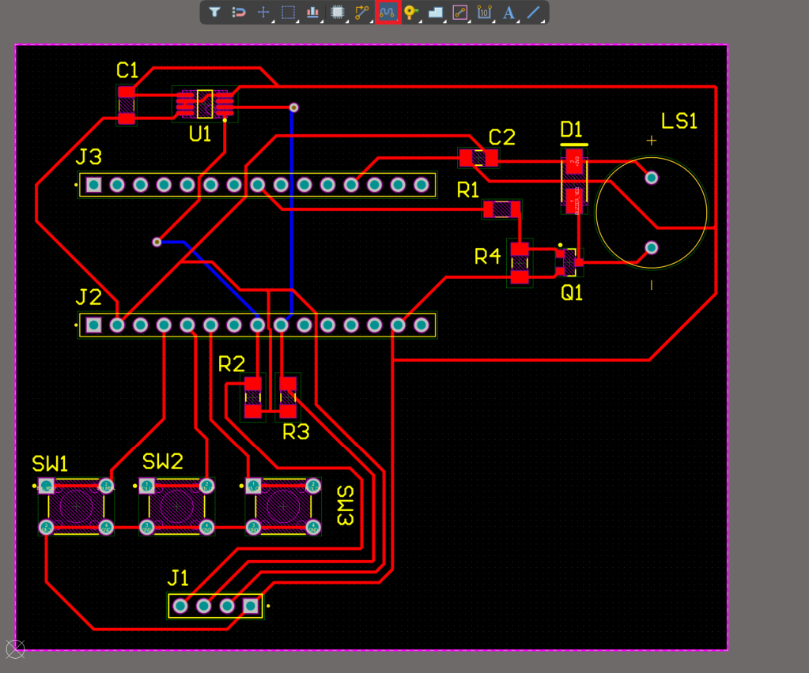
Procedimiento:
- inicia Interactive Routing;
- haz clic en un pad;
- sigue la Connection Line;
- coloca segmentos;
- termina sobre el pad destino.
Una vez completada correctamente la conexión, la Connection Line desaparecerá.
Herramientas durante Routing
Shift + Space → cambiar estilo de esquina
Shift + R → cambiar modo de obstáculos
Tab → opciones de Routing
Backspace → eliminar último segmento
Los modos de resolución de obstáculos incluyen opciones como:
Para comenzar resulta recomendable utilizar:
23. Cambio de capa y vías
Cuando una pista debe pasar de:
a:
es necesario insertar una:
Durante Interactive Routing puedes cambiar a otra capa disponible y Altium insertará automáticamente una vía.
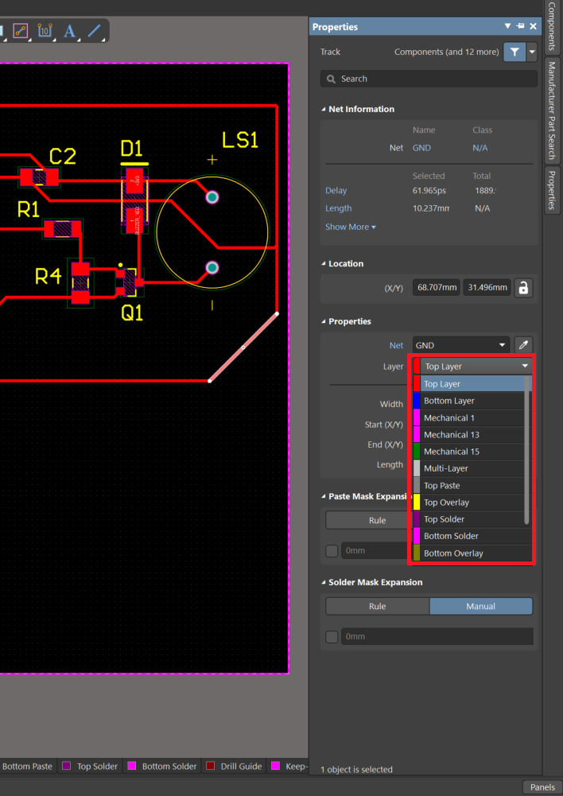
Una vía contiene principalmente:
y sus dimensiones deben cumplir las reglas del fabricante.
24. Polygon Pours y planos de GND
Un Polygon Pour permite crear grandes regiones de cobre.
Se utiliza habitualmente para:
Para crear uno:
- selecciona la capa;
- asigna:
- dibuja el perímetro;
- finaliza el polígono.
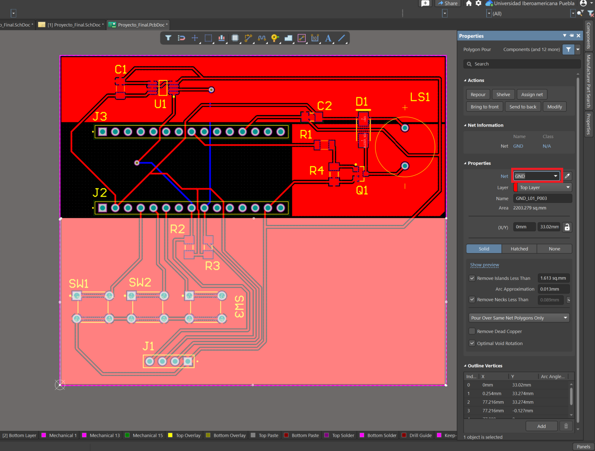
Después de modificar la PCB ejecuta:
para recalcular los polígonos.
Los polígonos respetarán automáticamente las reglas de Clearance.
25. Auto Route
Altium incluye:
para intentar rutear automáticamente el PCB.
Puede ser útil para experimentar o estudiar posibles rutas, pero no sustituye un buen placement ni una revisión manual.
Antes de utilizarlo deben estar correctamente configurados:
Para aprender diseño PCB es preferible comenzar utilizando Interactive Routing manual.
26. DRC y revisión final
Antes de fabricar ejecuta primero:
y después:
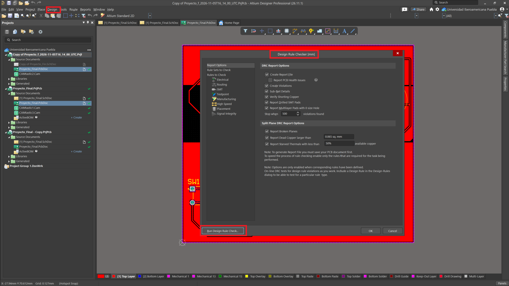
Ejecuta:
Revisa los errores desde:
o desde:
Problemas comunes
Clearance Constraint
Dos objetos están demasiado cerca.
Width Constraint
Una pista utiliza un ancho fuera de las reglas.
Short-Circuit Constraint
Dos Nets diferentes están eléctricamente conectadas.
Un-Routed Net
Existe una conexión pendiente.
Silk to Solder Mask
Texto o serigrafía demasiado cerca de un pad.
No reduzcas o desactives reglas únicamente para eliminar errores.
Corrige primero la causa.
27. Vista 3D
Para visualizar la PCB en tres dimensiones utiliza:
Para volver a 2D:
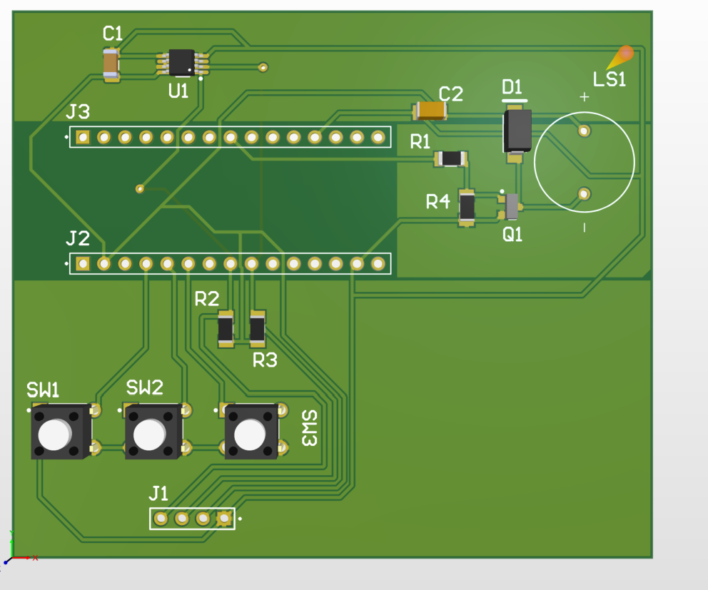
Utiliza esta vista para comprobar:
- orientación;
- conectores;
- alturas;
- componentes inferiores;
- agujeros;
- interferencias mecánicas.
Un componente puede funcionar correctamente en el PCB aunque no tenga modelo 3D, pero no podrás realizar una revisión mecánica completa.
28. Gerber y archivos de perforación
Una vez que:
y la PCB ha sido revisada, pueden generarse los archivos de fabricación.
Gerber
Utiliza:
o:
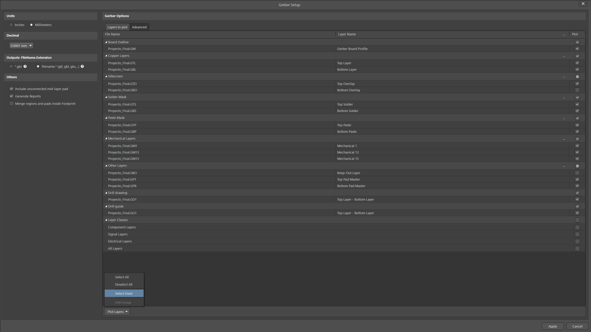
Para una PCB típica de dos capas normalmente se generan:
Las capas:
se utilizan principalmente para fabricar stencils de ensamblaje SMD.
Consulta siempre qué formato solicita el fabricante.
NC Drill
Los archivos de perforación se generan mediante:
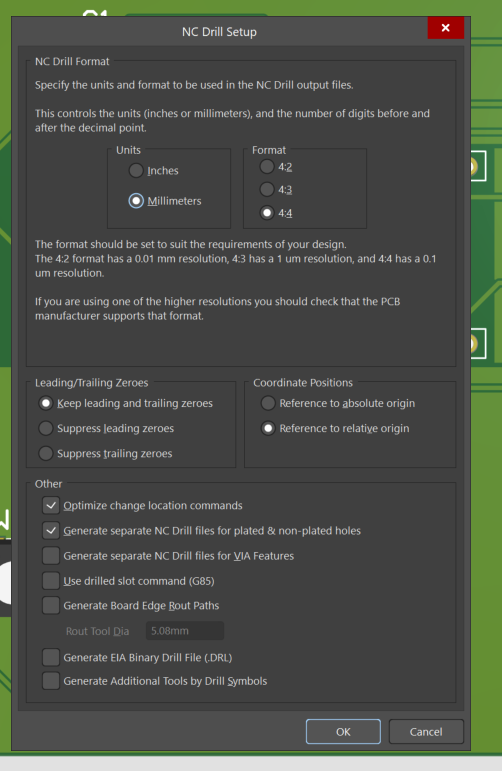
Incluyen información sobre:
- vias;
- pads through-hole;
- mounting holes;
- perforaciones.
Comprueba que Gerber y NC Drill utilicen:
- unidades compatibles;
- misma referencia de coordenadas;
- mismo origen.
Output Job
Para proyectos que generarás varias veces es recomendable utilizar un:
y centralizar dentro de él:
Esto evita tener que configurar las salidas manualmente cada vez.
Verificar antes de enviar
Después de generar los archivos abre los Gerbers y archivos de perforación en un visor CAM.
Comprueba:
especialmente que los taladros coincidan exactamente con pads y vías.
29. Flujo general recomendado
El proceso esencial de trabajo en Altium puede resumirse como:
CREAR PROYECTO
↓
CREAR ESQUEMÁTICO
↓
IMPORTAR LIBRERÍAS NECESARIAS
↓
COLOCAR COMPONENTES
↓
CONECTAR CON WIRES
↓
NET LABELS / POWER PORTS
↓
ANOTAR COMPONENTES
↓
VALIDATE PCB PROJECT
↓
COMPROBAR FOOTPRINTS
↓
UPDATE PCB DOCUMENT
↓
VALIDATE CHANGES
↓
EXECUTE CHANGES
↓
DEFINIR BOARD SHAPE
↓
CONFIGURAR GRID Y CAPAS
↓
CONFIGURAR / IMPORTAR RULES
↓
PLACEMENT
↓
INTERACTIVE ROUTING
↓
VIAS
↓
POLYGON POUR GND
↓
REPOUR ALL
↓
DRC
↓
REVISIÓN 2D / 3D
↓
GENERAR GERBER
↓
GENERAR NC DRILL
↓
VERIFICAR ARCHIVOS
↓
FABRICAR
Herramientas y atajos que conviene recordar
| Herramienta | Acción |
|---|---|
Esc |
Cancelar o salir de una herramienta |
Tab |
Modificar propiedades durante una operación |
Space |
Rotar objeto |
G |
Cambiar Grid |
Q |
Cambiar unidades mm/mil en PCB |
1 |
Board Planning Mode |
2 |
2D PCB Mode |
3 |
3D PCB Mode |
Shift + S |
Single Layer Mode |
Shift + Space |
Cambiar estilo de esquina durante Routing |
Shift + R |
Cambiar modo de resolución de obstáculos |
Backspace |
Eliminar último segmento durante Routing |
L |
Cambiar componente entre Top y Bottom durante movimiento |
Herramientas principales que debes conocer
Esquemático
Components
Properties
Wire
Net Label
Port
Power Port
Annotate Schematics
Validate PCB Project
Messages
PCB
Update PCB Document
Engineering Change Order
Board Shape
Origin
Grid
View Configuration
Layer Stack Manager
Design Rules / Constraint Manager
Interactive Routing
Via
Polygon Pour
Repour All
Design Rule Check
3D View
Fabricación
Conocer estas herramientas y comprender cómo se relacionan entre sí es suficiente para desarrollar la mayor parte de los proyectos PCB básicos e intermedios en Altium Designer.